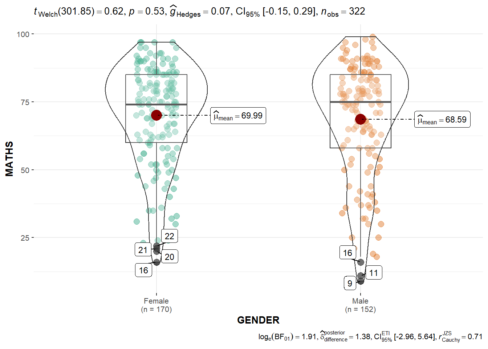

pacman::p_load(plotly, crosstalk, DT, patchwork, tidyverse, ggstatsplot, ggdist) Programming Interactive & Visual Statistical Analysis
In-Class Exercise 4
FIRST MODEL - Exam Data
1.1 OVERVIEW
This in-class exercise focus on using plotly( ) function and include visual statistical analysis.
1.2 R PACKAGE REQUIRED
1.2.1 Load R Packages
1.3 DATA PREPARATION
1.3.1 Acquire Data Source
This study will be based on fictitious data set provided with this lesson.
1.3.2 Import Data
Involved two (2) steps : import and inspect imported data set.
exam_data <- read_csv("data/Exam_data.csv")
problems(exam_data)# A tibble: 0 × 5
# … with 5 variables: row <int>, col <int>, expected <chr>, actual <chr>,
# file <chr>1.4 VISUAL INTERACTIVE
1.4.1 Create with plotly( ) function
plot_ly(data = exam_data,
x = ~ENGLISH,
y = ~MATHS,
color = ~RACE) %>%
layout(title = "Exam result for English and Maths",
plot_bgcolor = "#e5ecf6",
xaxis = list(title = "English Exam Result"),
yaxis = list(title = "Maths Exam Result"),
legend = list(title = list(text = "<b>Students' Race </b>")))1.4.2 Create with ggplot( ) function
Show the code
p <- ggplot(exam_data,
aes(ENGLISH,
MATHS)) +
geom_point(size = 1) +
coord_cartesian(xlim = c(0,100),
ylim = c(0,100))
ggplotly(p)Remarks :
To have more control of aesthetic interactive aspects, plot in plotly , compare to using ggplotly as the wrapper.
Show the code
ggplot(exam_data,
aes(ENGLISH,
MATHS)) +
geom_point(size=1) +
coord_cartesian(xlim=c(0,100),
ylim=c(0,100))1.5 VISUAL STATISTICAL ANALYSIS
1.5.1 Include Stats into Violins Chart
ggbetweenstats(data = exam_data,
x = GENDER,
y = MATHS,
type = "p",
messages = FALSE,
pairwise.display = "s",
outlier.tagging = TRUE)
Remarks :
p = Welsch Test, include Bayesian stats
np = WMann-Whitney Test, does not include Bayesian stats.
ggscatterstats(data = exam_data,
x = MATHS,
y = ENGLISH,
marginal = TRUE)
1.6 UNCERTAINTY CHECK
Before plot for uncertainty of point estimates.
Show the code
my_sum <- exam_data %>%
group_by(RACE) %>%
summarise(
n = n(),
mean = mean(MATHS),
sd = sd(MATHS)) %>%
mutate(se=sd/sqrt(n-1))Show the code
ggplot(my_sum) +
geom_errorbar(aes(x = RACE,
ymin = mean - se,
ymax = mean + se),
width = 0.2,
colour = "black",
alpha = 0.9,
size = 0.5) +
geom_point(aes(x = RACE,
y = mean),
stat = "identity",
color = "red",
size = 1.5,
alpha = 1) +
ggtitle("Standard error of mean maths score by race")
SECOND MODEL - Toyota Corolla
2.1 OVERVIEW
This second models focus on using easystats package.
2.2 R PACKAGE REQUIRED
2.2.1 Load R Packages
pacman::p_load(readxl, performance, parameters, see, readr, ggstatsplot) 2.3 DATA PREPARATION
2.3.1 Acquire Data Source
This study will be based on ToyotaCorlla data set provided with this lesson.
2.3.2 Import Data
Involved two (2) steps : import and inspect imported data set.
car_resale <- read_xls("data/ToyotaCorolla.xls",
"data")
problems(car_resale)2.4 VISUAL
2.4.1 Create with plotly( ) function
Show the code
model <- lm(Price ~ Age_08_04 + Mfg_Year + KM +
Weight + Guarantee_Period, data = car_resale)
model
Call:
lm(formula = Price ~ Age_08_04 + Mfg_Year + KM + Weight + Guarantee_Period,
data = car_resale)
Coefficients:
(Intercept) Age_08_04 Mfg_Year KM
-2.637e+06 -1.409e+01 1.315e+03 -2.323e-02
Weight Guarantee_Period
1.903e+01 2.770e+01 2.4.2 Check multicollinearity
Show the code
check_c <- check_collinearity(model)
plot(check_c)
2.4.3 Trim Away High Correlation Variable
Show the code
model1 <- lm(Price ~
Age_08_04 +
KM +
Weight +
Guarantee_Period,
data = car_resale)Show the code
gtsummary::tbl_regression(model1,
intercept = TRUE)| Characteristic | Beta | 95% CI1 | p-value |
|---|---|---|---|
| (Intercept) | -2,186 | -4,093, -278 | 0.025 |
| Age_08_04 | -119 | -125, -114 | <0.001 |
| KM | -0.02 | -0.03, -0.02 | <0.001 |
| Weight | 20 | 18, 21 | <0.001 |
| Guarantee_Period | 27 | 2.1, 52 | 0.034 |
| 1 CI = Confidence Interval | |||
2.4.4 Check Normality Assumption
Show the code
check_n <- check_normality(model1)
plot(check_n)
Show the code
check_h <- check_heteroscedasticity(model1)
plot(check_h)